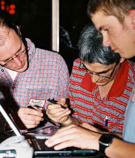
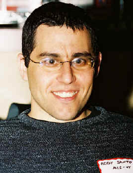
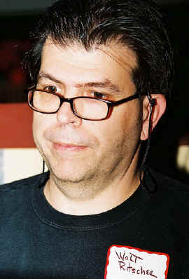
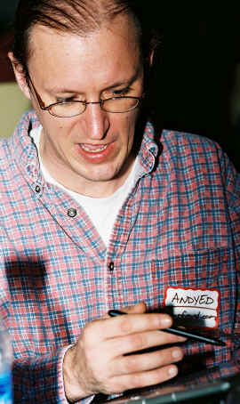
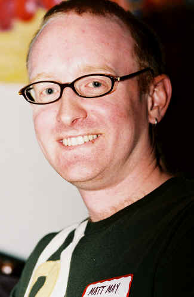
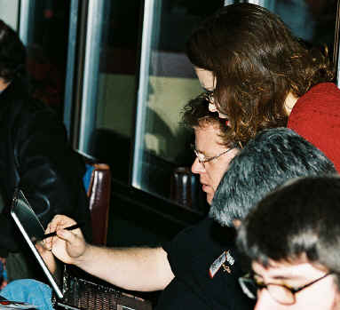
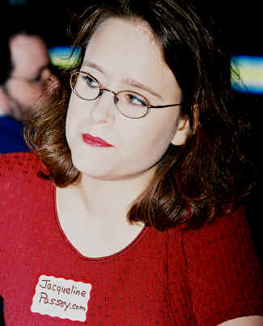
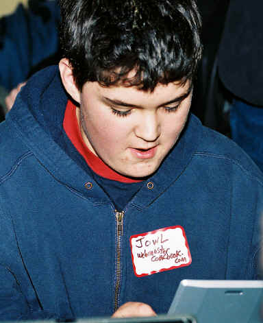
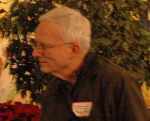

Viaggio Note
V041101
Bloggers
Seattle Meet-Up December 15, 2004
|
|
Viaggio Note
V041101 |
|
 A huddle of Tablet PCers Instead of fighting for the keyboard, now we can have dueling pens. |
2004
December 15. I was in an
on-line course
from October 14 to December 8 and I stayed away from events in the
interval. This
was my first time back out in the world, and I did wander around with my camera
a little bit. Based on the dozen or so pictures I took, I am
becoming less self-conscious about that. And to think that in high
school I thought I would become a photographer.
When Scoble announces geek dinners, he picks public places to congregate, saying that we should look for people who are Dilbert-equipped. It is usually not the case, at least for early arrivals. This time, the arriving wave brought many toys and anyone who came later had no trouble picking us out. The electronic scene was dominated by Tablet PCs and the latest Nintendo WiFi hand-held game sets. Tablets seem to be everywhere, and it is nice to see how they are used collaboratively by creating shared-network overlays and then working on shared documents. There were a number of Microsoft people in town for courses and, instead of having their own geek dinner the same night in Bellevue, a group came to the meet-up along with Robert Scoble, who'd promised to show Jacqueline Passey a Tablet PC. There were some great children and parents among and accompanying the geeks. It was a great evening. As usual, I left too soon. I get to the place where I feel that I've overstayed my welcome and it is time to catch that next bus. There's something that it would be good for me to get over. Anita has posted a nice summary of the event. |
|
 Addy Santo |
|
|
 Walt Ritscher |
|
|
 Andy Edmonds |
 Matt May |
|
I am using a film camera, with a new electronic flash that I am still not accustomed to -- I think I need a diffuser so I can work closer, as I prefer. Naturally, I have also split across two rolls of film and the second is not processed yet. So there will be more pictures later. I think I have Jacqueline Passey, Jack, Ryan Anderson, Jeff, Jowl, Jon, and Chas coming up. This is film and every frame is an adventure, so we'll see. Jon has a nice collection of digital pictures up for viewing. [I've never looked up everyone's blog before. Jeepers. And I could have gotten tips from Matt May on making my sites accessible, one of my goals on 43 Things, and I'd love to know what life was like at NASA from Chas.] |
|
|
Chas and I were the first to arrive. We did the awkward looking each other over until we decided that we must both be there for the meet-up, so we started arranging the tables and chairs while I enjoyed my guilty pleasure, a corned-beef Reuben with mustard (violating my diet, but my fitness coach knew I was going to do that). There were a few more stragglers, including Jacqueline and then Anita Rowland, Jack, and their grandson, R----. (I don't know why Anita has started disguising R----'s name, and I felt like I was in a European novel with him.) Anita had declared that it was white elephant exchange night. I didn't know exactly what that was but Chas explained it to me. I left all of my white elephants at home. Chas had some interesting l00t, such as SCSI cables, an original 100MB Zip drive (remember those) and other things. Probably the most geeky conversation I had was with Addy Santo, after learning about his name and his migrations between the U.S., Israel, and the U.S. He's in Microsoft Consulting Services, so we talked a little about the Microsoft Solutions Framework, when an MCS project is big enough to use it, and the drive to include more Agile methodology in it. Kristi Heim, a Seattle Times reporter, showed up as I was about to leave and we got to talk a little about her work and local blogging related to local community affairs, the elections, and so on. I was pleased that she remembered me. [2004-12-18: I do forget that I stand out as one of the oldest people there; in my head I am somewhere between 18 and 30, except when I am being 5 or 7.] I had been thinking of Kristi earlier that day. I learned about the Shark Blog through her column on local bloggers. We agreed that the Letters from Jerusalem by Shark's dad are really something. I suggested that Shark is mellowing a little and looking for more facts, but I guess, on reflection, that the allusions to King County as the Ukraine and Seattle as Kiev probably suggest how much he does love to see evil, even in numbers [and he squeezes those poor numbers really hard]. I am not sure his probability calculations against various small-sample deviations from the population mean are very sound, but I don't care that much in the case of our unresolved gubernatorial election. My personal effort was in favor of continuing the Seattle Monorail Project. For that, the numbers are simple. I told Kristi about 43 Things as a Seattle startup and promised to send her an invitation during their beta-site build-up. I did that the next morning. |
Jeff was sitting by himself when I was strolling
around the group looking for photo angles, so I sat down and talked with
him for a while. He explained that the name of his site is related
to a novel that he started. He seemed a little |
|
I also talked with Jack William Bell a little about his involvement in local science-fiction fandom. He showed me some information about local cons and the big one coming in the Spring. He gave me the URL for the sfnorthwest.org convention calendar. I don't read science fiction any longer although I was pretty heavily into it during what might be called the Robert Heinlein era -- I like to say that Heinlein taught me to read, and the first convention that I attended was the WorldCon in Seattle (at the airport) where Heinlein received the Hugo for Starship Trooper, as I recall. Fred Pohl let me beat him at chess in the Heinlein suite, and there were many other people I saw for the first time: Poul Anderson, A. J. Budrys, Avram Davidson, Harlan Ellison, and (Bob?) Mills, the publisher of Fantasy & Science Fiction come to mind. People talked about Forest Ackermann and he might have been there -- tall guy, I think. E. E. (Doc) Smith was there, and Robert Heinlein was excited about that. I don't remember seeing the Smiths, though I might have. The Heinlein's had traveled in the Soviet Union and that had left a big impression and they talked a lot about it. R.A.H was proud of serving on the Lexington, of course, and he remembered that the carrier had powered the city of Tacoma during a major electrical power failure before Word War II. I don't really connect with the current crop of writers since I let my subscriptions to Analog and Asimov's expire around 20 years ago. (I like Joe Haldeman [and Spider Robinson], I've read Greg Bear, Ben Bova, and a few others. I like Larry Niven. David Brin's Earth was the last science-fiction I (re-)read, I think. I disposed of all of my science-fiction books several years ago, even the autographed ones. I had forgotten Jack's name and I had to ask him
when he came in. But I don't know his full name and I have no
basis for assuming that he and Anita share the same last name. And
I didn't ask of course. So I finally found a link on Anita's
blog. Jack circulates the sign-up list, |
|
|
 |
 Jacqueline Passey |
|
 And a little wireless Nintendo with Jowl |
Ryan Anderson |
|
Jon |
 Jon's orcmid sighting Jon is a big cheerful guy and I thought maybe I had gotten too close while I still adjust to how bright my new flash adapter is. He was walking around with a high-quality digital camera and caught me in one of his larger scenes. |
|
|
You are navigating Orcmid's Lair |
created 2004-12-17-19:18 -0700 (pdt) by
orcmid |